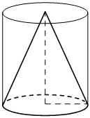

Авторский разбор и аудит предварительны; внешней экспертизы нет.
Модель автора: claude-opus-5-5 (opus; effort=low); в основных частотах: True ·
Впишите правильный ответ.
| Цилиндр и конус имеют общие основание и высоту. Объём цилиндра равен 6. Найдите объём конуса. |  |
КЭС: 7.4 Тела и поверхности вращения
2
| ID / вход | Действие | Результат | Локальные KC |
|---|---|---|---|
| s1 · condition | Сопоставить формулы объёмов цилиндра (V=S·h) и конуса (V=S·h/3) при общих основании и высоте и выразить объём конуса через объём цилиндра | V_конуса = V_цилиндра/3 = 6/3 = 2 | kc1 |
[
{
"id": "m1",
"name": "Отношение объёмов конуса и цилиндра с общими основанием и высотой",
"step_ids": [
"s1"
]
}
]Вход: цилиндр и конус с общим основанием и равной высотой, известен объём одного из тел. Операция: применить формулы V_цил=S·h и V_кон=S·h/3, получив отношение объёмов 1:3. Граница: только при совпадающих площадях оснований и высотах.
{
"local_kc_id": "kc1",
"status": "new_candidate",
"catalog_kc_id": null,
"evidence": [
{
"ref": "step:s1:action",
"quote": "Сопоставить формулы объёмов цилиндра (V=S·h) и конуса (V=S·h/3) при общих основании и высоте"
},
{
"ref": "step:s1:result",
"quote": "V_конуса = V_цилиндра/3 = 6/3 = 2"
},
{
"ref": "image:assets/685f328d7d6a96efd0accda6.png",
"region_description": "Цилиндр с вписанным конусом: нижнее основание (эллипс) общее, вершина конуса в центре верхнего основания цилиндра, штриховая высота от вершины до центра нижнего основания."
}
],
"context_refs": [
"condition",
"image:assets/685f328d7d6a96efd0accda6.png"
],
"alternatives_checked": [
{
"catalog_kc_id": "pyramid_volume",
"reason": "Формула V=Sh/3 для пирамиды; конус телом вращения не является пирамидой, определение его не покрывает."
},
{
"catalog_kc_id": "literal_19971b364ca1",
"reason": "Объём призмы V=Sh; цилиндр не призма, и узел не охватывает отношение объёмов двух тел."
},
{
"catalog_kc_id": "cylinder_lateral",
"reason": "Площадь боковой поверхности, а не объём."
},
{
"catalog_kc_id": "literal_e97bf0e03da7",
"reason": "Площадь боковой поверхности конуса, а не объём."
}
],
"rationale": "Наблюдаемое действие: применение формул объёма цилиндра и конуса при общем основании и высоте, вывод отношения 1:3 и вычисление 6/3=2. Математически верно; рисунок согласуется с условием. В каталоге нет узла объёма цилиндра/конуса или отношения объёмов тел с общими основанием и высотой; ближайшие узлы относятся к многогранникам или к площадям поверхностей.",
"proposal": {
"name": "Сравнивать объёмы конуса и цилиндра с общими основанием и высотой",
"definition": "Для цилиндра и конуса с одинаковыми площадью основания и высотой использовать V_цил=S·h и V_кон=S·h/3, получить V_кон=V_цил/3 и выразить неизвестный объём через известный. Применимо только при совпадении основания и высоты."
},
"blocking": false,
"issue_ids": []
}[]
[]
{
"author_path": "data/annotation/runs/2026-11-09-fipi-team-bogdan108-next-100/raw/author/41E054.json",
"auditor_path": "data/annotation/runs/2026-11-09-fipi-team-bogdan108-next-100/raw/auditor/41E054.json",
"accepted_after_review": null
}